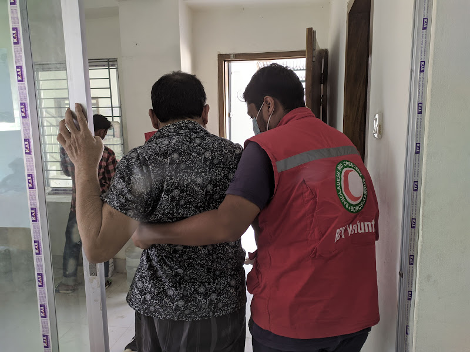
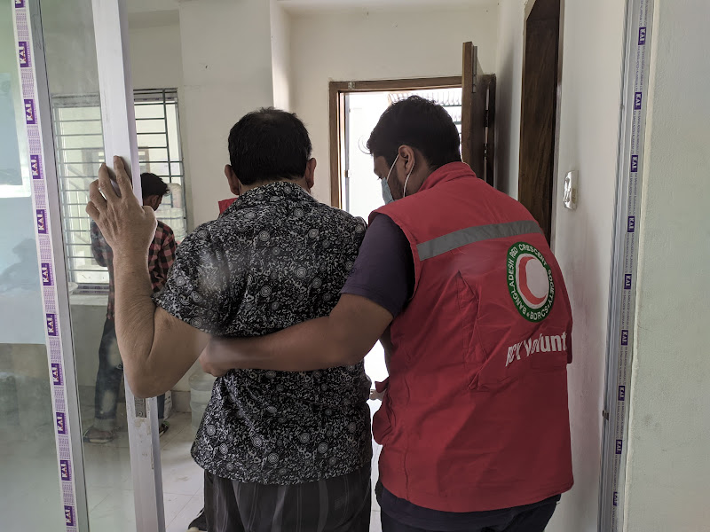

Bangladesh Red Crescent Society was established by the President Order 26 of 1973 as an auxiliary to the Public Authority. We are, the Bangladesh Red Crescent Society (BDRCS) – part of the world’s largest humanitarian non-governmental organisation, The International Red Cross and Red Crescent Movement. We have stood beside the Bangladeshi population throughout history and have played a crucial humane role in the relief, rescue and rehabilitation of hundreds and thousands of victims of flood, cyclone and other natural disasters in Bangladesh. Our work is outlined by our guiding principles, and our history that shapes our morals and ethics. Find out more about what makes us unique, compassionate and dedicated to caring, all over the world.
The Bangladesh Red Cross Society was constituted on 31 March, 1973 by the President’s Order No.26 of 1973 with retrospective effect from the 16th December 1971. The Society was recognized by ICRC on 20 September, 1973 and admitted to the International Federation of Red Cross and Red Crescent Societies on 02 November, 1973. The name and emblem were changed from Red Cross to Red Crescent on 4th April 1988 vide Act 25 of 1988. The President of the People’s Republic of Bangladesh is the ex-officio President of the Society. The President appoints the Chairman of the Society for a term of 3 years, who may hold two consecutive terms. BDRCS National Headquarters at Red Crescent Sarak, Boro Moghbazar, Dhaka is the Secretariat of the Society. The Secretary General, appointed by the Managing Board, heads the Secretariat. He is ex-officio the Secretary to the Managing Board. The Managing Board also appoints a Deputy Secretary General, who performs the functions of the Secretary General in his/her absence. The Secretariat is organized in five divisions, namely, Disaster Management, Health Services, Planning & Development, Central Support Services and Finance & Accounts.[I1] The BDRCS has 68 Units. A Unit is constituted in each district and in the Metropolitan cities of Dhaka. Chittagong, Rajshahi & Khulna.
In response to any disaster, Bangladesh Red Crescent Society (BDRCS) works in four phases: Mitigation, Preparedness, Response, and Recovery. The Disaster response department currently involve in the following response activities:
Cyclone SITRANG Response 2023
Sylhet Flash Flood Response 2022
Fire Response in Chottogram
COVID-19 Operation
Cyclone AMPHAN Operation
Flood 2017 Rocovery Operation
Myanmar Refugee Relief Operation
Population Movement Operation
Floods in Bangladesh’s northeast have spread to other districts as heavy monsoon rains continue to pummel Sylhet and Sunamganj districts, leaving millions of people stranded without power, food and drinking water. The continuous heavy rainfall in the north-eastern Indian region terribly affected more than 2 million people who live on the Surma-Kushiyara river’s bank of Bangladesh. Kanaighat, Gowainghat, Companyganj, Jaintapur, Zakiganj, Sylhet sadar, Fenchuganj, and many more upazillas of Sylhet as well as several upazilas of Sunamganj and Netrokona districts have been inundated. Meanwhile, water from the Surma River invaded buildings and stores in district. All road communications in Gowainghat upazila were disrupted. Approximately 90% of the residents of the upazila were stuck. The Disaster Response Department of BDRCS, along with IFRC, has been monitoring the situation, updating the contingency stock and situation report as well as coordinating with BDRCS units (branches) and in-country Red Cross Red Crescent Movement partners. Considering the current flood situation, the following initial activities are being considered for quick response to the second round of flooding. BDRCS has allocated BDT 650,000 for dry food (Sylhet BDT 200,000, Sunamganj BDT 200,000, Netrokona 100,000, Habiganj 50,000, Sherpur 50,000, and Kurigram 50,000) among the flood-affected people in particular who have taken refuge in different shelters. Besides, BDRCS allocated BDT 900,000 (Sylhet BDT 400,000, Sunamganj BDT 300,000 and in Netrokona BDT 200,000) for the distribution of cooked food among the flood-affected people. Free primary medical care services provided to flood victims through four medical camps. Considering the current situation, the Society has already sent four new medical teams to the affected districts. Bangladesh Red Crescent Society is preparing post flood support for the flood victims. Among the activities, food and livelihoods support, water and sanitation and shelter repair assistance are some key areas. The Society is seeking assistance from the local organizations and philanthropists for possible support to implement the ongoing relief efforts. DONATE BDRCS
Emergency Phase:
Dry/cooked Food Distribution: Reached 7,493 families. Food Package Distribution (funded by Grameen Phone): Food packages were distributed among 5,100 families in 10 districts. Food distribution by Swiss RC fund:4,222 families of Gaibandha and Sunamganj districts received seven-day food packages. Response of local Units: Red Crescent Units provided emergency dry food and cooked food using their own resources in 10 districts.
Early Recovery Phase:
Food package distribution: BDRCS reached 71,432 families in 30 districts with food packages. Cash Grant: BDRCS distributed cash for food to 5,000 families in 5 most affected districts BDT 1,400 (CHF 16)per family. Multipurpose cash grants:13,329 flood affected families in most severely affected districts received cash grants of BDT4,000 (CHF 50) and eight types of vegetable seeds per family.
Shelter/NFI Sector:
Emergency Phase:
Tarpaulin distribution: During 20-27 August 2,000 tarpaulin kits (consisting of 4m x 6m tarp, rope, candles and matches) were distributed to the most affected families of 20 districts.
Early Recovery Phase:
Tarpaulins: BDRCS distributed tarpaulin to 5,000 families in 5 most affected districts. Shelter materials: BDRCS distributed CGI sheets, shelter tools kits and blankets to 2,000 families in 5 districts.
WASH Sector:
Emergency Phase:
Drinking water distribution: BDRCS Mobilized Water Purification Unit and total 50,335 liters water were distributed to 7,380 families. Jerry cans:6,000 jerry cans were distributed to the most affected families in 20 districts. Tube wells:5,000 tube wells were repaired in Gaibandha.
Early Recovery Phase:
Jerry cans: BDRCS distributed jerry-cans to 5,000 (2 pcs per family) families in 5 most affected districts. Hygiene Parcels: BDRCS distributed hygiene parcels to 5,000 families in 5 most affected districts.
Health Sector:
Emergency Phase:
Distribution of Oral Rehydration Salt (ORS): Total 130,000 pcs ORS distributed among 13,000 flood affected families. Water Purification Tablets (WPT) in 20 Districts:14,000 WPT were distributed to 7,000 families.
Early Recovery Phase:
Medical team deployment: BDRCS mobilized more 18 mobile medical teams and assisted more than 18,000 people with medical assistance from mid-August to mid-September 2017.
CGI Sheet, shelter toolkits & Blanket Distribution:
CGI Sheet procured for 2,000 family (18 pcs/family & total 36,000 pcs). Blanket: 4,000 (2 pcs/ family). Shelter tool kit: 2,000 sets. Delivered at 5 districts under Flood Operation.Donate Blood Across Bangladesh, every day there remains an urgent need for all types of blood groups. Especially donors with rare blood groups such as O Negative, B Negative and A Negative are in high demand. Your timely response is essential to the supply of healthy blood for the massive daily demand we face. Your donation can save the lives of many, make a difference or simply make you feel great about your contribution to humanity. Whatever your reason, whatever your motivation we welcome you to learn more about eligibility and benefits of donating blood with a trusted organization like us. Find out more about local blood drives and BDRCS campaigns near you. Donate blood, save lives. Hotline: 01811458524 (9.00 AM to 5.00 PM) To Donate or Get Blood:


 
